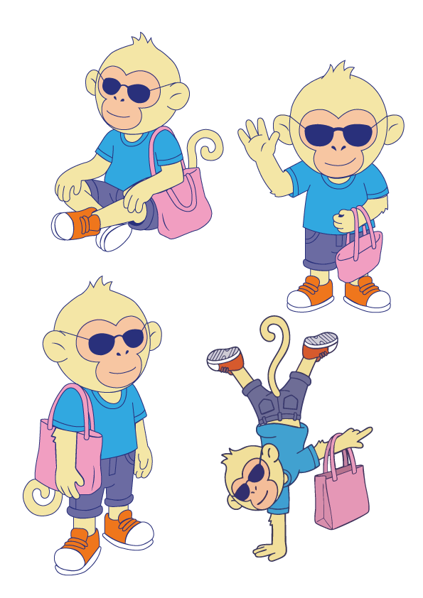
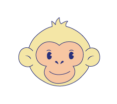
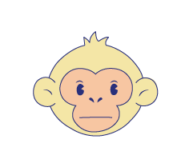
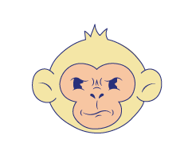

No soy solo un personaje, soy ese amigo curioso que, al igual que tú, está aprendiendo a navegar por el mundo de las emociones. Me encanta explorar, preguntar el porqué de las cosas y recordarte que ser amable contigo mismo es el primer paso para brillar.
A veces me siento así, ¿y tú?

💖Hoy me miro al espejo y me gusta lo que veo. No soy perfecto, ¡y eso es lo que me hace genial! Es tratarme con la misma amabilidad que a un mejor amigo.

🌊A veces el mundo va muy rápido. Aquí es donde tomo un respiro profundo, bajo las revoluciones y dejo que mis pensamientos fluyan como el agua.

🔥¡Siento chispas de creatividad! Es ese impulso de querer comerme el mundo, hacer preguntas locas y empezar eso que tanto me emociona.